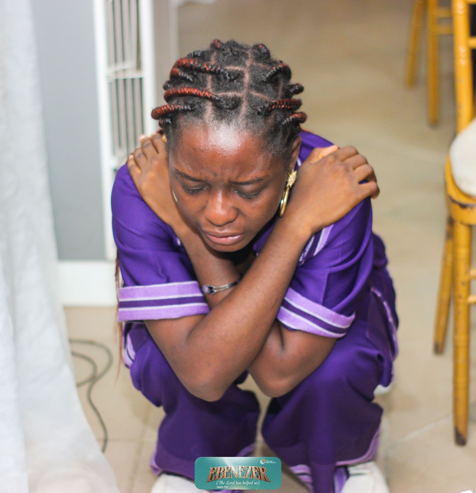
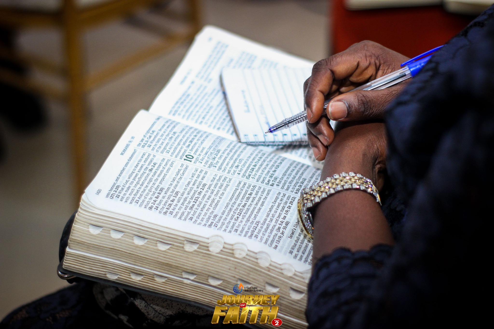
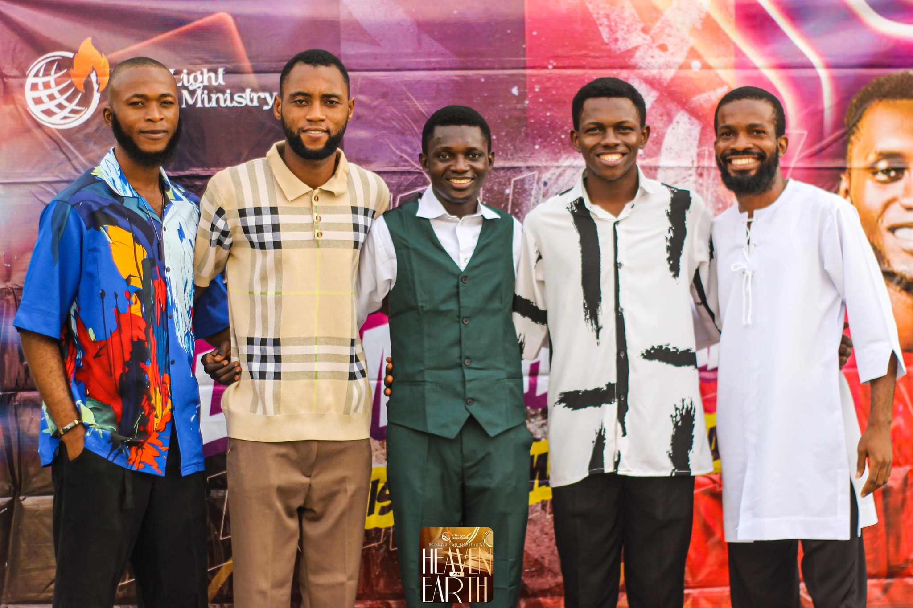

Deeply Established in the Word of God
Growing in faith through the power of Scripture.
"So faith comes from hearing the message, and the message is heard through the word about Christ." - Romans 10:17
Welcome to THE TRUE LIGHT GLOBAL MINISTRY
Welcome to our spiritual home. Whether you're exploring faith, seeking a deeper connection with God, or simply looking for a warm and supportive community, you belong here. Join us for heartfelt worship, thoughtful teaching, and meaningful relationships. Come as you are,find rest, purpose, and hope as we walk this journey together.

Encounter God's presence through heartfelt worship and authentic praise.

Grow in faith through scripture-grounded messages and biblical wisdom.

Connect with a welcoming family committed to serving God.
Plan Your Visit
We're excited to welcome you — here's a quick guide to make your first visit comfortable and easy.
When We Meet
- Sundays — 4:00 PM — Main Service
What To Expect
smiling faces, welcoming people, 30minutes of worship and praise, short bible reading, prayer charge, scripture-based message.
Parking & Accessibility
Free on-site parking is available. The building is accessible and we offer seats close to the entrance if you need them — contact us in advance and we'll reserve space.
Location
Da Bof event center, Oni Street, Alaguntan, Iyana Ipaja, Lagos State, Nigeria

Our Lead Pastor
Apostle Oche Michael Adanu is the founder of The True Light Global Ministry (The Communion), a ministry with a passion for reviving the saved and reaching the unsaved. He is a man who has dedicated himself to serving God and helping people grow in their faith.
One thing that stands out about him is his passion for the things of God and his desire to see people encounter Christ for themselves. Through his teachings, prayers, and ministry activities, he continues to encourage people to take their walk with God seriously. His vision for The Communion goes beyond just gathering people in church. It is about raising people who know God, live for Him, and are willing to be used for His purpose.
Apostle Oche Michael Adanu is also someone whose leadership and commitment have impacted the people connected to the ministry. His work through The Communion continues to create a platform where people can learn, grow spiritually, serve, and discover God's purpose for their lives. He is happily married to Micheal Christiania, a fellow pastor, CEO of Micheal's Kitchen Creation. Together, they have a child named Oche Light and are committed to advancing the kingdom of God through leadership, service, faith and prayers.
Our Programs
Discover the programs where you can grow, serve, and connect.